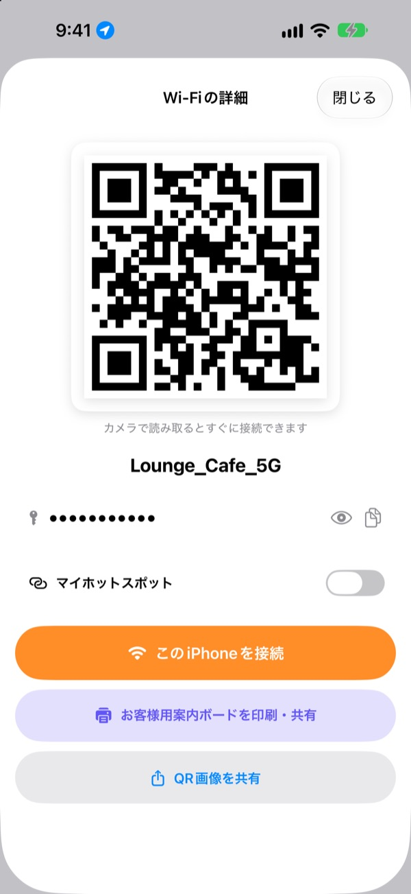
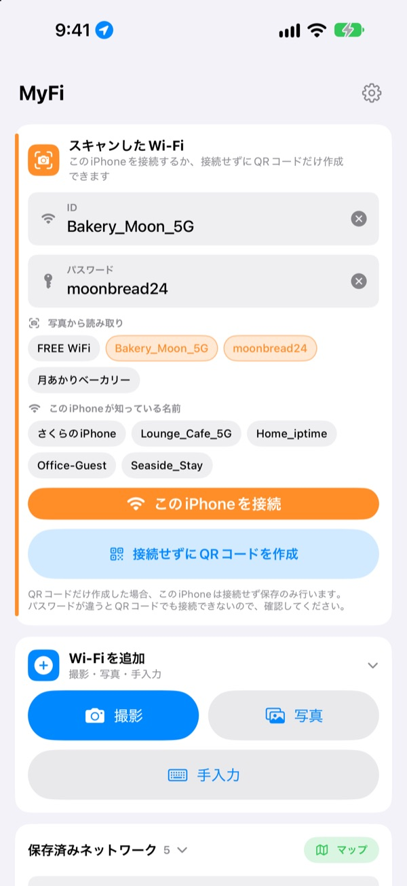
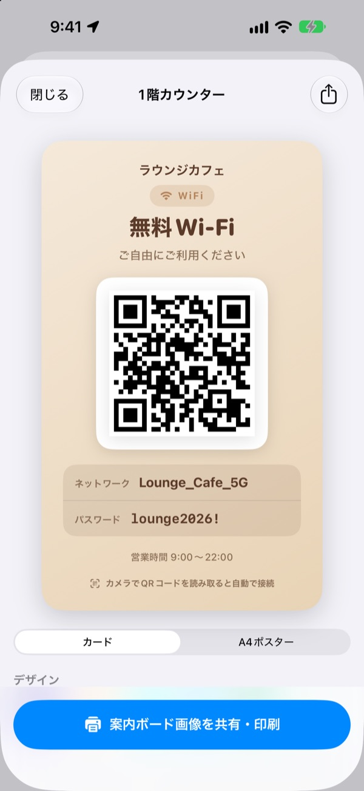
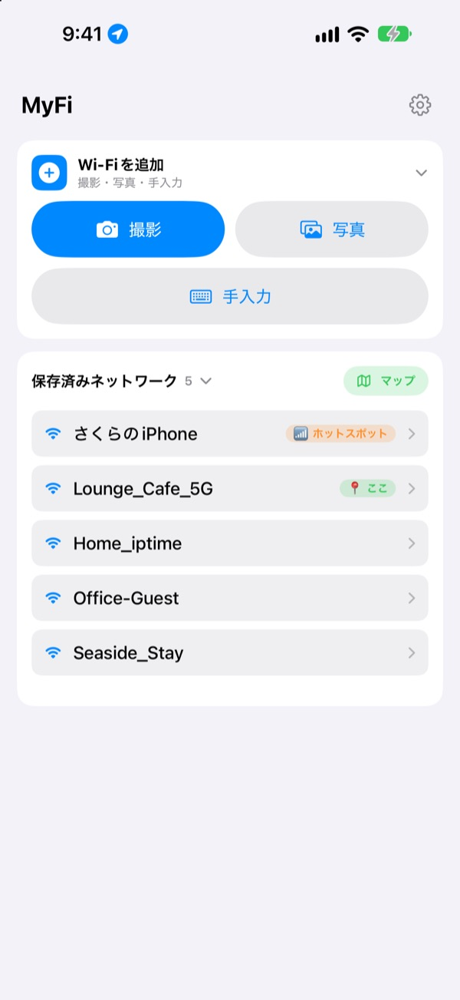

パスワードを読み上げるより、
QRコードを1枚
相手はカメラをかざすだけで接続できます。カフェの壁の案内は写真を1枚撮ればこのiPhoneがつながります。書き写して打ち間違えることもなくなります。
すべての機能が無料です。iOS 17以降のiPhoneに対応。

自分のWi-FiのQRコードを作ってみる
名前やパスワードを変えると、案内ボードがその場で変わります。スマートフォンのカメラをかざすと、本当に接続の案内が表示されます。
「Wi-Fiのパスワードは？」今日は何回目ですか？
読み上げれば大文字と小文字を間違え、壁の案内を書き写せば0とOを取り違え、また同じ説明を繰り返す。MyFiなら、その手間が写真1枚とQRコード1枚で済みます。
撮るだけでつながる
壁に貼られたWi-Fiの案内やレシートを撮影するか、写真から選ぶと、ネットワーク名とパスワードを読み取ってこのiPhoneを接続します。案内にQRコードがあれば文字より先にそれを読むので正確です。
読み取りが怪しいときは、写真から抜き出した文字を名前やパスワードの欄にドラッグするだけです。

お客様用の案内ボードを作って印刷
7つのテーマから選び、店名やロゴ、営業時間などを入れます。カード型とA4縦のポスターから選び、画像で保存するかAirPrintですぐに印刷できます。
お店ごと、席ごとに違う案内ボードを何枚でも作っておき、いつでも直せます。

また来た場所はいちばん上に
接続したり共有したりしたWi-Fiは、そのときの場所と一緒に保存されます。同じ場所に戻ると、そこのWi-Fiをいちばん上に表示し、保存した場所は地図でも見られます。
よく使うWi-FiはQRコードにしてホーム画面やロック画面のウィジェットに置いておけば、聞かれたら画面を見せるだけです。

使い始めは3ステップ
- 1
アプリを開く
いま接続中のWi-Fi名を知るために、最初に一度だけ位置情報の許可を求めます。
- 2
撮るか入力する
案内を撮影するか、自分のWi-Fiのパスワードを一度だけ入力します。
- 3
接続するか見せる
このiPhoneを接続するか、QRコードを表示して相手のカメラに見せれば完了です。
どこで操作するか
- 案内の写真から接続
Wi-Fiを追加で撮影か写真、続けてこのiPhoneを接続- 手で入力して接続
Wi-Fiを追加で手入力- 接続せずQRコードだけ作る
接続せずにQRコードを作成- QRコードをメッセージで送る
- 保存したWi-Fiをタップして
QR画像を共有 - お客様用の案内ボード
- 保存したWi-Fiをタップして
お客様用案内ボードを印刷・共有 - 自分のホットスポットをQRコードに
- 保存したWi-Fiをタップして
マイホットスポットをオン - すばやく接続・共有
- 一覧で右にスワイプすると接続、左にスワイプするとQRコードを共有
- 保存した場所を見る
保存済みネットワークの横のマップ- ホーム画面にQRコードを置く
- ホーム画面を長押しして、MyFiの
Wi-Fi QRウィジェットを追加
SiriやショートカットからもQRコードをすぐに開けます。
すべての機能が無料です
無料
- 写真からWi-Fiに接続
- QRコードの作成と画像での共有
- お客様用案内ボード：7つのテーマ、カード型とA4ポスター、AirPrintで印刷
- ホーム画面とロック画面のウィジェット
- 保存したWi-Fiの地図
- 広告なし、会員登録なし
応援する（任意）
- 気に入ったら、チップで開発を応援できます
- チップで機能が増えることはありません。払わなくてもすべての機能を使えます
チップは1回ごとの少額の支払いです。
サブスクリプションも有料機能もありません。
よくある質問
なぜパスワードを自分で入力するのですか？
iOSのセキュリティ上、どのアプリもデバイスに保存されたWi-Fiのパスワードを読むことはできません。そのため名前は自動で取得し、パスワードは最初に一度だけ入力します。次からは保存した値を使います。
接続中のWi-Fiの名前が表示されません。
iOSは位置情報の許可があるアプリにだけWi-Fi名を渡します。設定 › プライバシーとセキュリティ › 位置情報サービスでMyFiを許可してください。位置情報はWi-Fi名の取得と、また来た場所を見分けることにしか使いません。
写真の名前やパスワードが正しく読み取れません。
近づいてまっすぐ撮ると読み取りやすくなります。それでも違うときは、写真から抜き出した文字を正しい欄にドラッグするか、手で直してください。案内にWi-FiのQRコードがあれば、そのQRコードを読んで正確に入力します。
どんな案内を読み取れますか？
ID、PW、SSID、Network、Passwordなど、英語か韓国語で書かれた案内がいちばん得意です。ラベルがなくても、パスワードらしい行を見つけ出します。案内にあるWi-FiのQRコードは、何語でも正確に読み取ります。
QRコードを受け取った人はどう接続しますか？
iPhoneでもAndroidでも、標準のカメラでQRコードを読み取れば接続の案内が出ます。アプリを入れる必要はありません。
ほかの人にパスワードを見られますか？
QRコードには標準のWi-Fi接続情報が入っています。共有するかどうかは毎回自分で選べ、案内ボードではパスワードを非表示にもできます。
自分のホットスポットに接続できないのはなぜ？
iPhoneのインターネット共有は、そのiPhone自体がルーターなので自分にはつなげません。マイホットスポットをオンにすると、接続ではなく人に渡すQRコードとして扱います。
Wi-Fiの情報はどこへ送られますか？
MyFiにはサーバーがありません。Wi-Fiの名前とパスワード、写真の読み取り結果、位置情報はすべてデバイスの中だけで処理・保存します。広告や追跡ツールは使わず、アプリの改善のための匿名の利用統計とエラー報告だけをApple iCloudに送ります。
どのデバイスで使えますか？
iOS 17以降のiPhoneで使えます。アプリは24の言語に対応しています。
ご質問やご意見はleeo@kakao.comまでお送りください。通常2〜3日以内にお返事します。